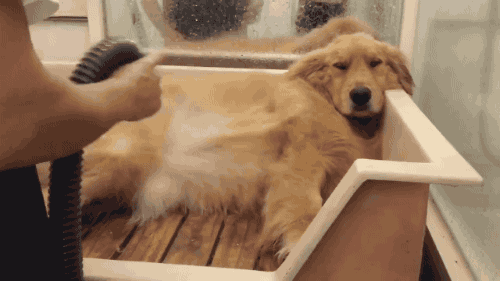
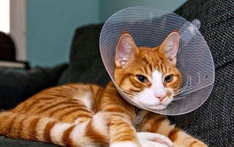

Nossos Serviços
Banho
O serviço de banho em nosso PetShop é mais do que uma simples higiene.
Oferecemos um tratamento de spa para o seu animal de estimação, proporcionando uma experiência de limpeza relaxante e revigorante.
Nossos profissionais especializados cuidarão do seu pet com carinho, usando produtos de alta qualidade que não apenas limpam, mas também nutrem a pele e o pelo..
Tosa

A tosa em nosso PetShop vai além da estética, é também uma questão de conforto e saúde para o seu pet.
Nossos tosadores experientes estão equipados para lidar com diferentes tipos de pelos e estilos de tosa, sempre considerando as necessidades individuais do seu animal de estimação.
Além de manter a pelagem em ótimas condições, a tosa ajuda a prevenir o superaquecimento em climas quentes e evita o acúmulo de sujeira e parasitas.
Castração
Promoção da saúde animal: Destaque como a castração é uma parte fundamental dos cuidados com a saúde dos animais de estimação, ajudando a prevenir doenças e condições indesejadas.
Comportamento: Mencione como a castração pode ajudar a reduzir comportamentos indesejados em animais de estimação, como marcação territorial, agressão e fugas.
Controle de reprodução: Explique como a castração ajuda a controlar a reprodução de animais, reduzindo a superpopulação e, consequentemente, o número de animais abandonados.